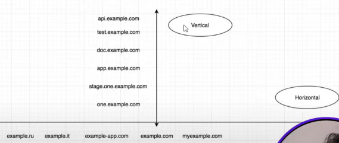

Horizontal Subdomains - All related domains that belong to single company
Vertical Subdomains - All actual subdomain of a single domain of a company

ARIN Whois
(
Whois-RWS (arin.net)
)
,
HurricaneElectricInternetServices (
Hurricane Electric BGP Toolkit (he.net)
)
for target domain ASN and IP Address Pools and other important details
MX toolbox Supertool
(
Network Tools: DNS,IP,Email (mxtoolbox.com)
)
- CIDR to total IP Range - ASN Lookup Option in supertool
IPADDRESSGUIDE (
CIDR to IPv4 Address Range Utility Tool | IPAddressGuide
)
is
used to find FirstIP, LastIP and Number of hosts in a particular IP Range (that includes subnetting)
ViewDNS.info (
ViewDNS.info - Your one source for DNS related tools!
), Lopseg
Lopseg | OSINT
, Whoxy
WHOIS API | WHOIS Lookup API | Domain WHOIS API (whoxy.com)
- All in One tool
REVERSE Whois Lookup - It is used to find domain name using company's Registrant Name or Email Address.
builtwith.com
BuiltWith Technology Lookup
-
Gives a list of technologies that are used to build a website.
Owasp Amass -
For In-depth Attack Surface Mapping and Asset Discovery, amass intel, amass enum